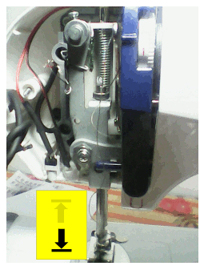
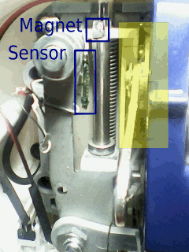

Sew machine
2014-03-04 Controls a mini sew machine (janome mini and clones):
- [ ]Needle always up;
- [ ]Needle always down;
- [ ]Needle follows pedal;
- [ ]Needle single shot;


Using ATtiny2313.
PD0: foot pedal : ----./ .---GND (red button)
PD6: buzzer
PD5: Magnetic sensor: ---10K---./ .---GND (greeen button)
PB2: pwm motor control